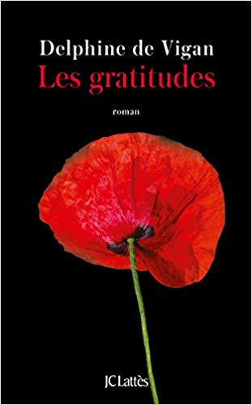

|  |
Les gratitudes :
Je suis orthophoniste.
Je travaille avec les mots et avec le silence. Les non-dits.
Je travaille avec la honte,le secret, les regrets. Je travaille avec l’absence, les souvenirs
disparus, et ceux qui ressurgissent,
au détour d’un prénom, d’une image, d’un mot. Je travaille avec les douleurs d’hier et celles
d’aujourd’hui. Les confidences.
Et la peur de mourir.
Cela fait partie de mon métier.
Mais ce qui continue de m’étonner, ce qui me sidère même, ce qui encore aujourd’hui, après plus de
dix ans de pratique,
me coupe parfois littéralement le souffle, c’est la pérennité des douleurs d’enfance. Une empreinte
ardente, incandescente, malgré les années.
Qui ne s’efface pas.
|
Disponibile |
50 DT |
|
Une fille comme elle:
À New York, sur la 5e Avenue, s'élève un petit immeuble pas tout à fait comme les autres... Ses habitants sont très attachés à leur liftier, Deepak, chargé de faire fonctionner l'ascenseur mécanique, une véritable antiquité.
Mais la vie de la joyeuse communauté se trouve chamboulée lorsque son collègue de nuit tombe dans l'escalier.
Quand Sanji, le mystérieux neveu de Deepak, débarque en sauveur et endosse le costume de liftier,
personne ne peut imaginer qu'il est à la tête d'une immense fortune à Bombay...
Encore moins Chloé, l'habitante du dernier étage...
|
Indisponibile |
60 DT |
|
Une évidence:
Reine mène une vie heureuse qu'elle partage entre son fils de dix-sept ans et un métier passionnant. Une vie parfaite si elle n'était construite sur un mensonge qui, révélé, pourrait bien faire voler son bonheur en éclats...
|
Disponibile |
50 DT |
|
Notre dame de Paris:
il ne fallait rien de moins, pour enlever les suffrages, que la grimace sublime qui venait d’éblouir l’assemblée.
Maître Coppenole lui-même applaudit ; et Clopin Trouillefou, qui avait concouru,
et Dieu sait quelle intensité de laideur son visage pouvait atteindre, s’avoua vaincu.
Nous n’essaierons pas de donner au lecteur une idée de ce nez tétraèdre (1), de cette bouche en fer à cheval,
de ce petit œil gauche obstrué,
d’un sourcil roux en broussailles tandis que l’œil droit disparaissait entièrement sous une énorme verrue,
de ces dents désordonnées, ébréchées çà et là, comme les créneaux d’une forteresse,
de cette lèvre calleuse sur laquelle une de ces dents empiétait comme la défense d’un éléphant,
de ce menton fourchu, et surtout de la physionomie répandue sur tout cela de ce mélange de malice, d’étonnement et de tristesse.
Qu’on rêve, si l’on peut, cet ensemble.
|
Disponibile |
50 DT 30 DT |